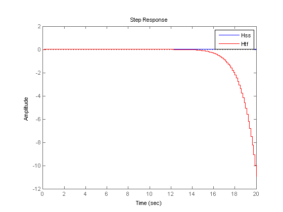
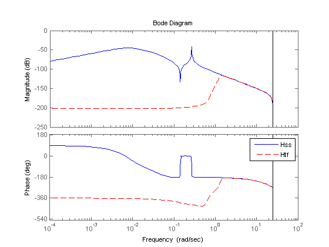
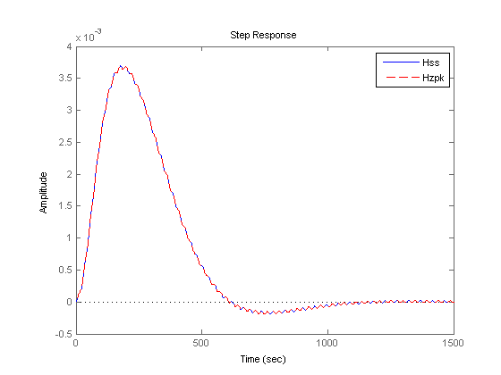
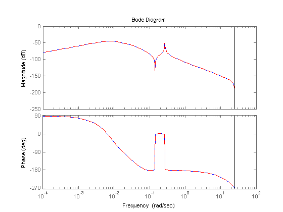
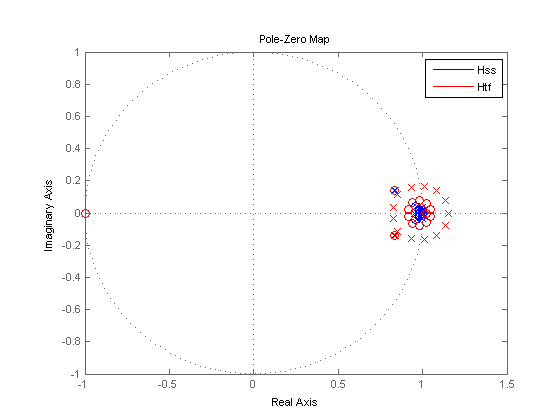
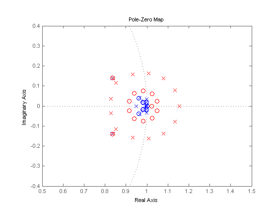
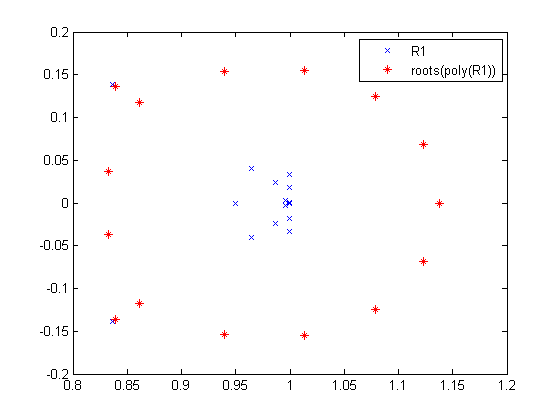

複数の根の感度
このデモでは、重複度の高い極の数値感度が高く、モデル表現を切り替えると、これらの極が大きくシフトする可能性があることを示します。
目次
デモの例
重複度の高い極およびその近傍の極から成るクラスターは、丸め誤差の影響を大きく受ける可能性があり、このことが劇的な結果を生じる場合があります。このデモでは、15 次の離散時間状態空間モデル Hss を、z=1 の近傍の安定極から成るクラスターと共に使用します。
load numdemo Hss
tf を使用してモデルを伝達関数に変換します。
Htf = tf(Hss);
応答の比較
Hss と Htf のステップ応答を比較して、極感度がモデルの安定性にどのような影響を及ぼし、時間応答と周波数応答の計算値にどのような大きな差を生じさせているかを確認します。
step(Hss,'b',Htf,'r',20) legend('Hss','Htf')
状態空間モデル Hss は安定している (モデルのすべての極が単位円内に収まっている) にもかかわらず、Htf のステップ応答は逸脱しています。ボード線図には、状態空間モデルと伝達関数モデルの間の大きな不一致も示されています。
bode(Hss,'b',Htf,'r--') legend('Hss','Htf')
状態空間から伝達関数に変換するために使用されるアルゴリズムは、この不一致の原因ではありません。状態空間から零点-極-ゲインへの変換という、SS から TF への変換における最初のステップを実行すると、この不一致はなくなります。
Hzpk = zpk(Hss); step(Hss,'b',Hzpk,'r--') legend('Hss','Hzpk')
bode(Hss,'b',Hzpk,'r--')
この解析では、ZPK から TF への変換という、多項式の根からの計算のみを伴う変換において不一致が生じることが示されています。
不一致の原因
こうした大きな不一致の原因を理解するには、状態空間モデルとその伝達関数の極/零点マップを比較します。
pzplot(Hss,'b',Htf,'r') legend('Hss','Htf')
Hss では、z=1 の近傍に極がクラスター化して密集しています。これらの極が伝達関数の分母に再結合されると、丸め誤差が極のクラスターに摂動を与え、z=1 の近傍に均等に分布された極の輪 (摂動を与えられた重根の典型的なパターン) を生成します。残念ながら、摂動を与えられた極の一部は単位円と交差し、伝達関数を不安定にしています。これらの極を表示するには、プロットを拡大表示します。
pzplot(Hss,'b',Htf,'r'); axis([0.5 1.5 -.4 .4])
この説明は、シンプルな実験をすることで確認できます。根が Hss の極 R1 である多項式を作成し、この多項式の根を計算して、これらの根を R1 と比較します。
R1 = pole(Hss); % poles of Hss Den = poly(R1); % polynomial with roots R1 R2 = roots(Den); % roots of this polynomial plot(real(R1),imag(R1),'bx',real(R2),imag(R2),'r*') legend('R1','roots(poly(R1))');
このプロットは、クラスター化された根のために ROOTS(POLY(R1)) が R1 と大きく異なることを示しています。その結果、伝達関数の分母の根は、元の状態空間モデル Hss の極と大きく異なっています。
結論を言えば、状態空間モデルまたは零点-極-ゲイン モデルを伝達関数形式に変換するプロセスは、精度を大きく損ねる可能性があるため避けるべきです。